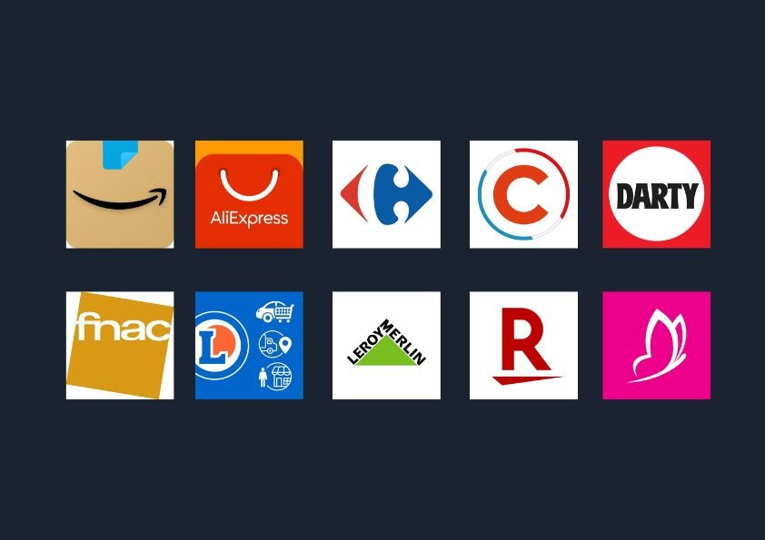
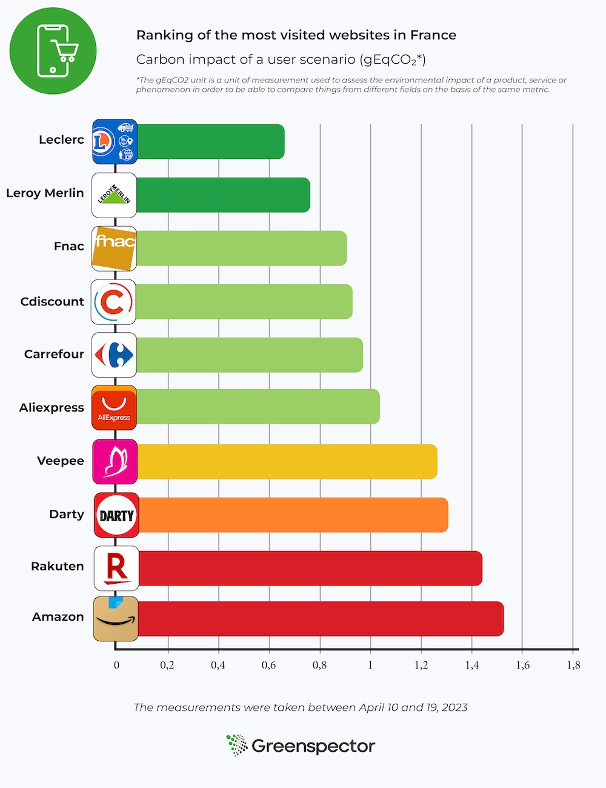

The e-commerce market in France in 2022 amounted to 146.7 billion euros in sales. This is a growth of 13.8% compared to 2021. Although the turnover (CA) of product sales is down compared to the previous year, the considerable increase (+36%) in the CA of service sales supports the overall growth of the e-commerce sector.
Fast access
Selection method of websites and applications
Ranking of the environmental footprint of the 10 most visited m-commerce sites in France
Ranking of the environmental footprint of the 10 most visited m-commerce applications in France
There were 2.3 billion transactions made on the internet in France in 2022, 6.5% more than in 2021. Inflation and the sale of services contributed to an increase in the average basket with 6.9% increase. It was on average 65 euros in 2022.
This article can be used as a comparison with the previous content made on the subject in 2022. The article focused on the e-commerce figures in 2021 and the ranking of m-commerce apps and websites in the 2nd quarter of 2021.
E-commerce refers to all transactions made on the Internet, while m-commerce refers to all types of purchases made on an e-commerce website with a mobile device. M-commerce is therefore a sub-category of e-commerce.
Selection method of websites and applications
For this new version, we based ourselves on the measurement of the 10 most visited m-commerce sites and applications in France (figures of the 4th quarter 2022 exposed by Fevad). Compared to the previous ranking, 2 players have appeared: Rakuten and Darty. It is eBay and ManoMano that are out of the top 10.

User path definition
After refining the selection of the 10 applications and websites to be measured, we went back to the path that was defined in last year’s article.

Implementation of Greenspector’s solution
We used our innovative solution to measure the environmental impact of different stages of the user journey. We ran the automated tests several times on a real device, in this case the Samsung Galaxy Note 8. We measured resource consumption (energy, memory, data) and response times. This data then allowed us to obtain the environmental impact of applications and websites. We explain it all in detail in our methodology.
Learn about our solutionRanking of the environmental footprint of the 10 most visited m-commerce sites in France
The 3 sites with the least impact are : Leclerc, Leroy Merlin and Fnac.
Compared to the article published last year, Cdiscount is back on the podium while the Fnac site is in the top 3 of the least impactful sites.
The 3 most impactful sites are: Amazon, Rakuten and Darty.
The Amazon site is 2.2 times more impactful than the Leclerc site.
The average carbon impact of these 10 websites is 1.09gEqCO2 for an average duration of the scenario (see methodology at the end of the article) of 1 minute and 58 seconds, which is the equivalent of 5 meters driven by light vehicle.

Projection of global carbon impacts over one month
In last year’s article we based ourselves on the figures presented in the ECN report. For this new study, we used the Fevad barometer enriched by Médiamétrie in order to be as close as possible to reality.
For this projection, we consider that the share of global e-commerce traffic is 55% on mobile, 39% on PC and 6% on tablet (source). We also used the ADEME tool to project the equivalences.
With an average of 16.15 million monthly users and an average visit time of 5 minutes and 50 seconds, these 10 e-commerce sites have an average projected impact of 172 tons of CO2e per month (29 tons on mobiles, 139 tons on PCs, 4 tons on tablets). This is the equivalent of 20 times the circumference of the Earth covered by a light vehicle.
Impact projection for the most and least sober website
Concerning the best website of this ranking (Leclerc) for 14.84 million visits / month with a duration of 3 minutes, the total carbon impact would be 58 tons of EqCO2 per month (9 tons on mobile, 47 tons on PC and 1 ton on tablet). This is the equivalent of 6 times the circumference of the Earth travelled in a light vehicle.
Concerning the worst website of this ranking (Amazon) for 38.29 million visits / month with a duration of 8 minutes, the carbon impact would be 690 tons of EqCO2 per month (121 tons on mobile, 553 tons on PC and 15 tons on tablet). This is equivalent to 79 times the circumference of the Earth travelled by light vehicle.


The fact that the Leclerc site is at the top of the ranking is mainly due to the low energy consumption of the product viewing and shopping cart viewing stages. Only the essential information is present on this search page (product name, price, availability). On the product page, there is the possibility to quickly add the product to the cart, and drop-down menus are proposed if the customer wants more information. This site is also the one that exchanges the least amount of data to complete the scenario.
By analyzing the product search results page with our measurement tool, we can see that many good practices are applied. There are few network exchanges with 19 HTTP requests and only one CSS file. The lazy-loading of images is applied.
Focus from our Greenspector experts on the least sober site: Amazon
The fact that the Amazon site is last in the ranking is explained by the search and product viewing stages. Indeed, this site consumes a lot of energy on these phases. The data exchange is also important. There are 2,62Mb of data exchanged for the search phase, and 5,85Mb of data exchanged for the visualization of the product sheet. During the search, a lot of information appears (indication « Suggestions », « Sponsored », « Amazon Choice » or « No. 1 in sales », product name, rating, number of reviews, price, discount, delivery date). However, unlike last year, we notice that there are no more autoplay video ads on this phase. When viewing the product, a lot of information also appears (offers, delivery dates in case of free or accelerated delivery, product details, products frequently purchased together…). Moreover, the customer is obliged to scroll before being able to access and click on the « Add to cart » button.
Going into more detail on the product search page, there are a lot of network exchanges with 119 HTTP requests and 11 CSS files. These figures are up from last year’s 109 and 9 respectively. The lazy-loading of images is not applied, which implies that the images are not visible on the screen. This practice should be avoided, as the user will not necessarily scroll to these images.
Ranking of the environmental footprint of the 10 most visited m-commerce applications in France
The 3 applications with the least impact are: Carrefour, Darty and Veepee
The 3 most impactful applications are: Amazon, Aliexpress and Leroy Merlin
We observe that the Amazon application has a carbon impact 3 times higher than the Carrefour application.
The average carbon impact of these 10 applications is 0.81 gEqCO2 for an average scenario duration of 1 minute and 58 seconds, or the equivalent of 3 meters driven in a light vehicle.


The Carrefour application takes its place in the phases of viewing the product sheet and adding the product to the cart, which are lower in energy consumption and in the amount of data exchanged. On the add to cart stage, this can be explained by the fact that it does not automatically redirect to the cart and only generates a simple change on the add to cart button which becomes a quantity selector.
Focus of our experts on the least sober application: Amazon

This year again Amazon is at the last place of the ranking. This result is explained once again by the product search and visualization phases, during which the application consumes a lot of energy. In terms of data exchanged we observe 4.73MB on the product visualization stage (against 0.05MB for Carrefour) and 4.15MB on the search stage (against 0.19MB for Carrefour).
Review of the study
This year again we observe that the impact is almost three times greater between the most sober platform and the one with the highest impact.
To shop online, it is better to use applications than websites. Indeed, in the scenario studied, websites have on average 44% more impact. Only Leroy Merlin and Leclerc have a greater carbon impact on applications than on the web. We remind you that applications have an impact on their download and their updates. They are therefore to be preferred only in case of regular orders.
We would like to complete this assessment with an observation we made during our tests. Indeed, we observed that on some websites and applications the path could change or be altered. This is the case for Amazon which has implemented AB testing. This method allows the application and the website to vary the displays. For example, on the description of a product, the description can be different from one user to another.
In our case we encountered a phenomenon of change of path on the Amazon website. During a first test we were redirected directly to the shopping cart with the addition of the product to it. In a second test the next day we were no longer automatically redirected to the shopping cart page. Instead, we had to go to the shopping cart ourselves by clicking on the icon provided for this purpose.
Depending on the path, the site or application will consume more or less energy and exchange more or less data. AB testing is a feature used by many digital solutions in the world and we handle it in our path automation thanks to our GDSL language. In the case of our study we have of course taken care to base our measurements on a single path.
Results tables
Ranking of the 10 most visited websites in France
| Applications | Version | Energy consumption (mAh) | Exchanged Data (Mo) | Carbon Impact (gEqCO2) | Water footprint (Litres) | Surface footprint (m²) | Scenario duration (seconds) |
|---|---|---|---|---|---|---|---|
| eBay | 6.51.0.2 | 11,69 | 0,53 | 0,51 | 0,09 | 1,27 | 119,73 |
| Carrefour | 14.4.3 | 11,67 | 0,57 | 0,52 | 0,10 | 1,29 | 108,64 |
| LeclercDrive | 15.2.0 | 11,97 | 0,45 | 0,52 | 0,10 | 1,30 | 128,01 |
| Leroy Merlin | 7.12.3 | 12,95 | 0,51 | 0,55 | 0,11 | 1,41 | 115,84 |
| Cdiscount | 1.43.0-twa | 13,81 | 0,04 | 0,58 | 0,11 | 1,49 | 115,44 |
| Fnac | 5.2.7 | 12,78 | 1,14 | 0,59 | 0,11 | 1,41 | 128,84 |
| Veepee | 5.24.2 | 12,17 | 2,32 | 0,63 | 0,11 | 1,35 | 114,47 |
| ManoMano | 1.15.2 | 15,48 | 0,26 | 0,65 | 0,12 | 1,69 | 124,59 |
| AliExpress | 8.44.0 | 17,55 | 2,33 | 0,84 | 0,17 | 1,94 | 123,71 |
| Amazon Shopping | 24.6.0.100 | 19,74 | 12,86 | 1,46 | 0,22 | 2,31 | 126,03 |
Ranking of the 10 most visited applications in France
| Sites web | URL | Énergie (mAh) | Données échangées (Mo) | Impact carbone (gEqCO2) | Empreinte Eau (Litres) | Empreinte Sols (m²) | Durée du scénario (secondes) |
|---|---|---|---|---|---|---|---|
| Leclerc | e.leclerc | 11,57 | 2,59 | 0,61 | 0,10 | 1,29 | 102.72 |
| Cdiscount | cdiscount.com | 13,49 | 2,62 | 0,69 | 0,13 | 1,50 | 108.03 |
| eBay | ebay.fr | 14,00 | 3,96 | 0,78 | 0,14 | 1,58 | 122.24 |
| Leroy Merlin | leroymerlin.fr | 15,47 | 3,15 | 0,80 | 0,14 | 1,72 | 112.67 |
| AliExpress | fr.aliexpress.com | 14,84 | 3,89 | 0,80 | 0,13 | 1,67 | 114.46 |
| ManoMano | manomano.fr | 13,60 | 6,30 | 0,87 | 0,14 | 1,56 | 107.33 |
| Fnac | fnac.com | 16,88 | 4,20 | 0,90 | 0,15 | 1,90 | 118.37 |
| Veepee | veepee.fr | 14,50 | 8,19 | 1,00 | 0,16 | 1,68 | 114.95 |
| Carrefour | carrefour.fr | 20,25 | 4,14 | 1,04 | 0,19 | 2,25 | 118.8 |
| Amazon | amazon.fr | 19,04 | 18,06 | 1,68 | 0,24 | 2,29 | 123.84 |
The selection is based on applications and sites where we can define a common path. We therefore discarded some sites and apps that presented a path too different from the one displayed below. Example: Booking.com.
We also discarded 2 solutions based on the purchase between individuals which are Leboncoin and Vinted.
For each site and each application, measured on a Samsung Galaxy Note 8 (Android 9), the measurements were made from scripts using GDSL (Greenspector Domain-Specific Language). This language allows to automate actions to be performed on a phone. The measurements were performed between April 10 and 19, 2023.
The scenario is defined based on the user’s path to purchase a product. We do not go to the payment stage. We stop at the product visualization.
Details of the common scenario for the 20 measures:
-Launching the site or application
-Pause for 30 seconds on the home page
-Search for a product using the search bar, then view the products offered
-Select a product, then view its characteristics (details, reviews…)
-Add the product to the cart
-Pause for 30 seconds on the shopping cart page
Each measurement is the average of 5 homogeneous measurements (with a low standard deviation). The consumptions measured on the given smartphone according to a wifi type network can be different on a laptop with a wired network for example. For each iteration on the websites, the cache is emptied beforehand.
Côté projection de l’empreinte, les paramètres pris en compte pour réaliser ces classements sont :
- Ratio de visualisation : 100% Smartphone
- Ratio de visualisation : 100% France
- Localisation des serveurs : 100% Monde
Learn how Greenspector assesses the environmental footprint of a digital service.